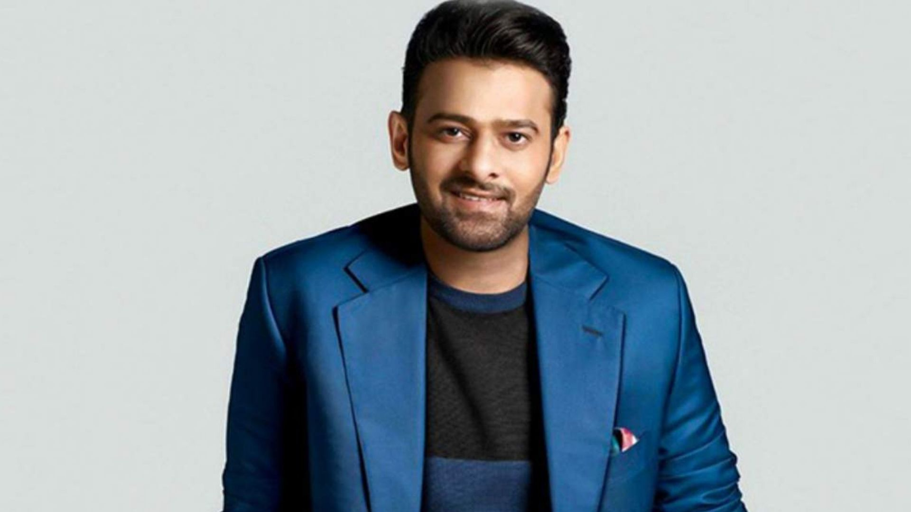
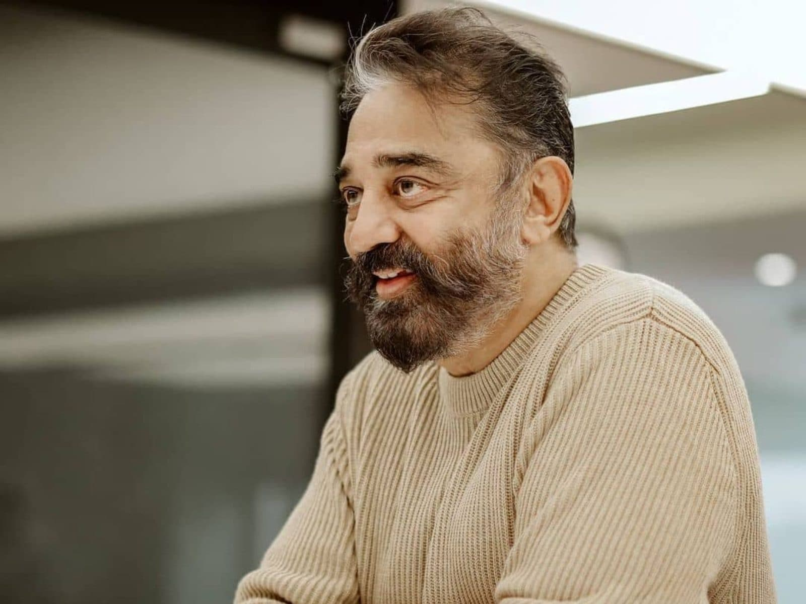

October

Uppalapati Venkata Suryanarayana Prabhas Raju (born 23 October 1979), known mononymously as Prabhas
is an Indian actor who predominantly works in Telugu cinema. One of the highest-paid actors in Indian cinema,
Prabhas has featured in Forbes India's Celebrity 100 list three times since 2015 based on his income and
popularity.He has received seven Filmfare Awards South nominations and is a recipient of a Nandi
Award and a SIIMA Award.
click here to dispaly your bestfriend pic
November

Kamal Haasan (born 7 November 1954) is an Indian actor, filmmaker, screenwriter, playback singer,
television presenter and politician who works mainly in Tamil cinema and has also appeared in some
Telugu, Malayalam, Hindi, Kannada and Bengali films. He is regarded as one of the finest actors in
the Indian cinema. Haasan is also known for introducing many new technologies and cosmetics to
the Indian film industry. He has won numerous accolades, including Four National Film Awards,
Nine Tamil Nadu State Film Awards, Four Nandi Awards, One Rashtrapati Award, Two Filmfare Awards
and 17 Filmfare Awards South. He was awarded the Kalaimamani Award in 1984, the Padma Shri in 1990,
the Padma Bhushan in 2014 and the Ordre des Arts et des Lettres (Chevalier) in 2016.
2.click here to dispaly your bestfriend pic
December

Rajinikanth is an Indian actor who works mainly in Tamil cinema.
In a career spanning over five decades, he has done more than 160 films that includes
films in Tamil, Hindi, Telugu, Kannada, Bengali, and Malayalam. He is widely regarded as
one of the most successful and popular actors in the history of Indian cinema. Known for
his uniquely styled lines and idiosyncrasies in films, he has a huge fan base throughout
India and has a cult following. The Government of India honoured him with Padma Bhushan in
2000, Padma Vibhushan in 2016, India's third and second highest civilian honours, and Dadasaheb
Phalke Award in 2019 for his contributions to Indian cinema.
2.click here to dispaly your bestfriend pic
{kind=link}